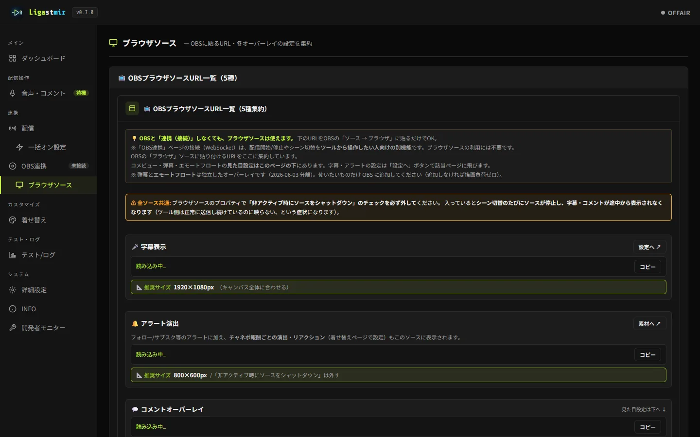
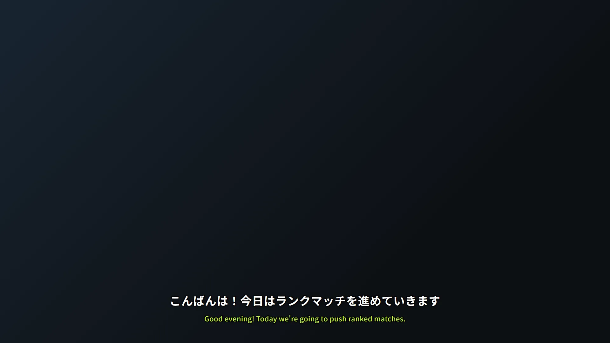

よくある質問
Ligastmir を試す前の疑問に短くお答えします。具体的な手順やつまずいた時の対処は使い方 & こんな時はにまとめています。
💡 導入前の疑問
OBS の代わりになるソフト？ OBS に入れている広告（SCOP など）やウィジェットはどうなる?
いいえ、OBS の代わりではありません。配信・録画は今まで通り OBS で行い、Ligastmir は横で動かす補助ツールです。字幕・コメビュー・アラートなどは、OBS に「ブラウザソース」として追加して使います。なので、OBS に入れている広告サービス（SCOP など）や他のツールのブラウザソースは、そのまま一緒に使えます。コメントや演出を広告に重ねたくないときは、OBS のソースの並びで広告を上に置いてください（広告の置き方の決まりは、各サービスのガイドをご確認ください）。「↻ OBS側を更新」ボタンも、v0.9.8 からは Ligastmir のソースだけを読み込み直します（v0.9.7 までは他のブラウザソースも読み込み直していました）。
「Twitch のコメント1通で、OBS の中からプログラムが動く」という話（2026年9月）は、Ligastmir に関係ある?
Ligastmir の表示（コメビュー・弾幕・アラート・字幕・ピックアップなど）は、この攻撃の入口になりません。
この攻撃は、①コメントをHTML のまま画面にはめ込むチャット表示 ②OBS 32.2.2 以前の内蔵ブラウザ（ブラウザソース）の既知の穴 ③OBS がブラウザの保護（サンドボックス）を切っていること、の3つがそろったときに起きます。
Ligastmir はコメント・名前・チャネポの入力をすべて文字として出しているので、①に当たりません（v0.9.7 以前の版も同じです）。
そのうえで、②③は OBS 側の問題なので、OBS の新しい版（33 で直る予定）が出たら更新してください。v0.9.8 からは、つないだ OBS が 32.2.2 以前のときにログに一度だけお知らせします（総合診断にも 1 行出ます）。 ほかのツールのチャット表示・通知・オーバーレイ・ドックは提供元を確かめ、出所の分からないものは入れないのがおすすめです。 （出典: SCRT の報告（英語））
そのうえで、②③は OBS 側の問題なので、OBS の新しい版（33 で直る予定）が出たら更新してください。v0.9.8 からは、つないだ OBS が 32.2.2 以前のときにログに一度だけお知らせします（総合診断にも 1 行出ます）。 ほかのツールのチャット表示・通知・オーバーレイ・ドックは提供元を確かめ、出所の分からないものは入れないのがおすすめです。 （出典: SCRT の報告（英語））
今使っている配信ツール（わんコメ等）と併用できる?
はい、併用できます。 Ligastmir は OBS を補助する役割で、既存のツールと一緒に使えます（OBS の代わりではありません → 上の質問）。
VOICEVOX は必須?
いいえ、任意です。Windows 標準の音声（SAPI5）なら準備なしでそのまま読み上げできます。VOICEVOX や棒読みちゃんは使いたい人だけ。
無料?
無料です。 各自が自分の API キー等を設定して使う形なので、サーバー費用もかかりません。
インストールは必要?
いいえ。exe をダブルクリックするだけで動きます（Python などのインストールは不要）。（インストーラー版は v1.0.0 で配布予定・準備中）
設定や取り込んだ素材は、どこに保存されている？
インストーラー版（v1.0.0 で配布予定・準備中）は Windows のアプリ用の場所（
%LOCALAPPDATA%\Ligastmir）、zip 版は Ligastmir.exe と同じフォルダです。アプリの「詳細設定 → 📂 データの置き場所」で場所を確かめて、エクスプローラーで開けます。動作が重い／読み上げが遅いときは?
PC環境による「順番待ち」や合成の重さが原因のことが多いです。対処をいくつかまとめています。負荷が高い時はワンボタンの「軽量モード」で負荷を下げることもできます（v0.8.0〜）。
字幕やコメビューの見た目（フォント・位置）は変えられる?
はい。フォントを5種類から選べ、字幕は色・サイズ・表示位置・最大行数を調整できます。翻訳字幕は日本語字幕と別の位置に置けるので、ゲーム画面やワイプに被らないよう逃がせます。
配信タイトルやカテゴリをツールから変更できる?
できます。Twitch はタイトル・カテゴリ・タグ、YouTube はタイトル・説明・サムネイルをツール内から変更できます。配信タイトルは Twitch と YouTube の両方へ一度で反映することもできます（片方だけ接続していればその配信のみ）。
コメントやスタンプで演出を出せる?
はい。「リアクション」機能で、特定のキーワード・スタンプ・イベントをきっかけに効果音や画像・絵文字の演出を自動で出せます。何も設定しなければ演出は出ません（使いたい人だけ）。
配信中にトラブったら？ 安全に止められる?
はい。どのページでもヘッダのボタンから「軽い停止」で、読み上げ・翻訳・演出だけをワンボタンで止められます（コメント表示は続きます）。外部接続の一括切断や、設定が壊れて開けない時に最小構成で立ち上げ直す「セーフモード起動」も。うまく動かない時は「総合診断」が原因の候補と対処を日本語で教えてくれます（v0.8.0〜）。
読み方（辞書）や画面の配置を、他の配信者と共有できる?
できます。読み上げ辞書（用語や名前の読み）を「辞書パック」としてファイルで受け渡したり、ダッシュボードの構成（レイアウト）を書き出し・取り込みで共有できます（v0.8.0〜）。視聴者名やパスワード等の機微情報は含めない安全設計です。
ダウンロードしたものが本物か確認できる?
公式の入手先はこのサイトと公式Discordだけです。ツールは起動時に本体を自己チェックし、書き換えを検知すると警告します。見分け方は専用ページにまとめています。
🔧 症状から探す
OBSに字幕やコメビューが表示されない
ブラウザソースの「非アクティブ時にソースをシャットダウンする」のチェックを外すのが第一手。次に Ligastmir が起動しているか（ソース右上の赤ドットが消える＝接続）、URLが正しいかを確認します。Ligastmir を OBS より先に起動（またはOBSの同伴起動を使用）すると確実です。

テスト字幕は出るのに、本番の字幕が出ない
アプリを OneDrive などの同期フォルダ直下に置かない／マイクを 16bit・48000Hz（or 44100Hz）・モノラルにすると直ることが多いです。
翻訳のかわりに英語のエラー文（Error 500 など）が読み上げられた・チャットに投稿された
v0.9.2 以前の不具合です。v0.9.3 で修正しましたので、更新してください。翻訳先から返ってきたエラーの文章を「翻訳結果」として扱ってしまっていたのが原因です。v0.9.3 では結果が本当に翻訳になっているかを確かめてから使い、失敗したときは静かに次の翻訳先へ切り替わります（どれも通らなければ何も表示しません）。
→ 最新版を入手する
コメビューを横並びにしたら1件しか表示されない
OBSのブラウザソースの幅が足りていません。v0.9.3 から推奨サイズが 1920×1080（画面と同じ大きさ）に変わりました。ソースのサイズを変えてから、アプリ側の位置・余白・幅で置き場所を決めてください。※古い 420×600 のままでも縦並びは動きます。
コメントが取得できない
「配信」ページで接続していますか？ Twitch はチャンネル名を入れて接続するだけ（登録・ログイン不要）。YouTube は配信URLとAPIキーが必要です（配信が始まっていないと取得は待機になります）。
OBS 連携の「パスワード」に何を入れればいい？（IP を入れたらつながった）
OBS の「ツール → WebSocketサーバー設定」で「WebSocketサーバーを有効にする」を ON にし、同じ画面の「接続情報を表示」に出るサーバーパスワードを、Ligastmir の OBS連携 の「WebSocket のパスワード」に貼ります。
OBS は最初から「認証を有効にする」が ON で、パスワードが自動で作られています。OBS や Twitch のログインのパスワードではありません。
サーバーパスワードが [認証無効] と出る（認証を OFF にした）ときは、空欄のままでつながります。IP を入れてつながったのは、認証が無効だとパスワードの欄を見ないためです（v0.9.9 からは、IP のような値は保存も送信もしません）。
同じパソコンの OBS なら、IP（127.0.0.1）とポート（4455）はそのまま。「接続情報を表示」の「サーバーIP（推測）」は、別のパソコンからつなぐときの値です。
サーバーパスワードが [認証無効] と出る（認証を OFF にした）ときは、空欄のままでつながります。IP を入れてつながったのは、認証が無効だとパスワードの欄を見ないためです（v0.9.9 からは、IP のような値は保存も送信もしません）。
同じパソコンの OBS なら、IP（127.0.0.1）とポート（4455）はそのまま。「接続情報を表示」の「サーバーIP（推測）」は、別のパソコンからつなぐときの値です。
読み上げが動かない・声が出ない
Windowsの音量と出力先デバイスを確認。VOICEVOX の声なら VOICEVOX 本体が起動しているか、棒読みちゃんなら本体を先に起動してからエンジンを選んだかを確認してください。
演出（効果音・画像）が出るときに一瞬カクつく・音が遅れて鳴る
v0.9.0 で仕組みから直しました。割り当てた効果音と画像をあらかじめ読み込んでおくようにしたので、
本番の発火では待たされません。まずは新しい版に入れ替えてみてください。
それでも気になるときは、次の順に見直すと効きます。
それでも気になるときは、次の順に見直すと効きます。
- 素材を軽くする：効果音は 1〜3秒・数百KB（MP3/OGG）、画像は 512px 四方くらいまでが目安。 GIF はアニメを保つためリサイズされないので、長尺・高解像度の GIF は特に重くなります。
- OBS のブラウザソース：「非アクティブ時にソースをシャットダウンする」をオフに。 オンだと切り替えのたびに読み込み直しになり、毎回もたつきます。
- OBS のハードウェアアクセラレーション：ブラウザソースの描画が重いときは、 OBS の「設定 → 詳細設定」やグラフィックドライバの更新で改善することがあります。
- Windows の電源プラン：ノートPCの省電力設定だと、配信中にCPUが絞られて全体がもたつくことがあります。 「バランス」以上を目安に。
- 同時に走らせているものを減らす：ゲーム・ブラウザのタブ・録画などが重なると、 演出に回る余力が減ります。Ligastmir の軽量モードも使えます。
なお、素材のサイズに上限はありません。上の数字は「これくらいだと軽い」という目安です。
v0.9.10 にしたら、何が変わる？（何もしなくても変わる点）
v0.9.10 で、次のことは何もしなくても変わります。
① マイク・場所: 字幕などでマイクを使っていないときは、タスクバーに「マイク使用中」の印が出なくなります／起動した瞬間に「マイクを使用する」の確認が出なくなります（まだ許可していない方は、マイク欄に「『更新』を押すとマイクの一覧が出ます」と出ます）／詳細設定に「📂 データの置き場所」が増えます。
② 字幕: 翻訳が出せなかったときは、前の訳を残さず翻訳の行を消します／OBS の字幕・コメビューなどは、何も届かなくなったら自分で繋ぎ直します（更新したあと、OBS のブラウザソースを一度「↻ OBS側を更新」か再読み込みしてください）。
③ コメント: モデレーターが消したコメント・BAN した人のコメントは、画面と読み上げ待ちから消えます／YouTube のスーパーチャット・メンバー継続などがコメント欄に札つきで出て、金額も読み上げます（メンバー加入・ギフトは、新しい切り替えを ON にしたときアラートに出ます）／弾幕とピックアップの YouTube のコメントに「YouTube」の札が付きます（YouTube の決まり・消せません）。
④ 接続: Twitch のチャットが切れたら自動でつなぎ直します（配信ページに「再接続中」）／長い YouTube の配信では、コメントを取りに行く間隔を広げます（2 時間を過ぎると 5 秒・8 時間を過ぎると 8 秒ごと）。
⑤ 表示: ダッシュボードの「来場者数」は「視聴者数」になり、1 分ごとに更新します／YouTube だけの配信でも ON AIR になります。
⑥ 名簿・記録: YouTube の人は、最後のコメントから 30 日で名簿から消えます（常連バッジの回数も最初から・YouTube の決まり）。コメントログの YouTube の行も 30 日で消えます／名簿の ✕ と「名前を指定して消す」（表に出ていない人も）は、その人をコメントログからも消します（確かめが出ます）／報告用 zip にコメントログを入れません。
⑦ 読み上げ: 「ユーザーごとに声を変える」の自動の候補から、商用に承認が要る No.7・ぞん子を外しました／もち子さんのクレジットは公式の書き方「もち子(cv 明日葉よもぎ)」に、ユーレイちゃん・Voidoll・里石ユカにも規約どおりの表記が付きます。
⑧ YouTube の配信情報: URL が終わった配信のものなら、反映の前に確かめます（前回の配信を書き換えないように。「🔎 今の配信を探す」で今の配信を選べます）。
インストーラー版は v1.0.0 で配布予定です（準備中）。
① マイク・場所: 字幕などでマイクを使っていないときは、タスクバーに「マイク使用中」の印が出なくなります／起動した瞬間に「マイクを使用する」の確認が出なくなります（まだ許可していない方は、マイク欄に「『更新』を押すとマイクの一覧が出ます」と出ます）／詳細設定に「📂 データの置き場所」が増えます。
② 字幕: 翻訳が出せなかったときは、前の訳を残さず翻訳の行を消します／OBS の字幕・コメビューなどは、何も届かなくなったら自分で繋ぎ直します（更新したあと、OBS のブラウザソースを一度「↻ OBS側を更新」か再読み込みしてください）。
③ コメント: モデレーターが消したコメント・BAN した人のコメントは、画面と読み上げ待ちから消えます／YouTube のスーパーチャット・メンバー継続などがコメント欄に札つきで出て、金額も読み上げます（メンバー加入・ギフトは、新しい切り替えを ON にしたときアラートに出ます）／弾幕とピックアップの YouTube のコメントに「YouTube」の札が付きます（YouTube の決まり・消せません）。
④ 接続: Twitch のチャットが切れたら自動でつなぎ直します（配信ページに「再接続中」）／長い YouTube の配信では、コメントを取りに行く間隔を広げます（2 時間を過ぎると 5 秒・8 時間を過ぎると 8 秒ごと）。
⑤ 表示: ダッシュボードの「来場者数」は「視聴者数」になり、1 分ごとに更新します／YouTube だけの配信でも ON AIR になります。
⑥ 名簿・記録: YouTube の人は、最後のコメントから 30 日で名簿から消えます（常連バッジの回数も最初から・YouTube の決まり）。コメントログの YouTube の行も 30 日で消えます／名簿の ✕ と「名前を指定して消す」（表に出ていない人も）は、その人をコメントログからも消します（確かめが出ます）／報告用 zip にコメントログを入れません。
⑦ 読み上げ: 「ユーザーごとに声を変える」の自動の候補から、商用に承認が要る No.7・ぞん子を外しました／もち子さんのクレジットは公式の書き方「もち子(cv 明日葉よもぎ)」に、ユーレイちゃん・Voidoll・里石ユカにも規約どおりの表記が付きます。
⑧ YouTube の配信情報: URL が終わった配信のものなら、反映の前に確かめます（前回の配信を書き換えないように。「🔎 今の配信を探す」で今の配信を選べます）。
インストーラー版は v1.0.0 で配布予定です（準備中）。
v0.9.9 にしたら、左メニューに「素材倉庫」、アラートに「連続視聴」が増えた
v0.9.9 で、次の 3 つは何もしなくても変わります。
① 左メニューに「📦 素材倉庫」（着せ替えの下）。フォルダを作らなければ、BGM や素材を選ぶ窓の見た目は今までどおりです。
② アラートの種類に「👀 連続視聴」。既定は OFF なので、何もしなければ出ません（表示するアラート・テスト・素材の行に 1 行増え、総合診断などは「7/8 種別（連続視聴は OFF）」と出ます）。
③ OBS のパスワードの欄に IP のような値を入れても、保存も送信もしません（知らせが出ます）。OBS の認証が無効なら、そのままつながります。
アラートの見た目と音は、設定を変えなければ v0.9.8 と同じです。
① 左メニューに「📦 素材倉庫」（着せ替えの下）。フォルダを作らなければ、BGM や素材を選ぶ窓の見た目は今までどおりです。
② アラートの種類に「👀 連続視聴」。既定は OFF なので、何もしなければ出ません（表示するアラート・テスト・素材の行に 1 行増え、総合診断などは「7/8 種別（連続視聴は OFF）」と出ます）。
③ OBS のパスワードの欄に IP のような値を入れても、保存も送信もしません（知らせが出ます）。OBS の認証が無効なら、そのままつながります。
アラートの見た目と音は、設定を変えなければ v0.9.8 と同じです。
v0.9.8 にしたら、左メニューの印やダッシュボードのボタン、読み上げのタイミングが変わった
v0.9.8 で、次の 5 つは何もしなくても変わります。
① 左メニューの印: 「接続」（配信・OBS連携）と「稼働中」（音声・コメント・BGM・テスト/ログが動いているとき）がそろって出ます。いらなければ 詳細設定 →「🧭 左メニューの表示」で隠せます。
② ダッシュボードの「クイック操作」: 接続の切り替えと、読み上げのスキップ／全部止めるだけになりました。シーンの切り替えは「シーン切替」パネル、設定は左メニューからどうぞ。
③ 日本語のコメントは翻訳を待たずに読みます（チャット翻訳を ON にしている方）。これまでどおり訳を待つには 音声・コメント →「💬 コメント関連」の「日本語コメントは訳を待たずに読む」を OFF に。
④ BGM の連続再生では、アラートやチャネポの効果音に使っている音源を飛ばします（クリックすれば鳴ります）。
⑤ NG ワードの英単語は語の頭から一致します（rape で grape を止めない）。日本語はこれまでどおり、含まれていれば当たります。
① 左メニューの印: 「接続」（配信・OBS連携）と「稼働中」（音声・コメント・BGM・テスト/ログが動いているとき）がそろって出ます。いらなければ 詳細設定 →「🧭 左メニューの表示」で隠せます。
② ダッシュボードの「クイック操作」: 接続の切り替えと、読み上げのスキップ／全部止めるだけになりました。シーンの切り替えは「シーン切替」パネル、設定は左メニューからどうぞ。
③ 日本語のコメントは翻訳を待たずに読みます（チャット翻訳を ON にしている方）。これまでどおり訳を待つには 音声・コメント →「💬 コメント関連」の「日本語コメントは訳を待たずに読む」を OFF に。
④ BGM の連続再生では、アラートやチャネポの効果音に使っている音源を飛ばします（クリックすれば鳴ります）。
⑤ NG ワードの英単語は語の頭から一致します（rape で grape を止めない）。日本語はこれまでどおり、含まれていれば当たります。
v0.9.7 にしたらアラートの枠の色が変わった
元々そのつもりだった色が出るようになりました。アラートは種類ごとに色が決まっています（フォロー＝緑、サブスク・再サブスク＝オレンジ、ギフト＝ピンク、レイド＝水色、チア＝若草、チャネポ＝緑）が、
最初の版からこの色が枠線と見出しに効いておらず、全部テーマの色（ライム）で出ていました。v0.9.7 で直しています。
今までの色のままがよい場合は、着せ替えページ →「枠（背景ボックス）の表示」→ 枠線色の「既定(種別色)」を外して好きな色に、見出しも「見出しの色」で固定できます。
コメビューの「翻訳文の色」を変えても変わらない
v0.9.6 までの不具合です。色を選んでも設定に届く前に止まっていました（8/30 に追加してから一度も効いていませんでした）。v0.9.7 で直り、色を選んだ瞬間に OBS 側が変わります。
効果音と画像のタイミングを合わせたい／わざとずらしたい
v0.9.0 から「音のずれ」を設定できます。アラート・チャネポ報酬・リアクションのそれぞれの行に、
ミリ秒で指定する欄があります。マイナスで音が先、プラスで音が後、0 で同時です。
たとえば
200 にすると、絵が出た 0.2 秒あとに音が鳴ります（溜めを作りたいときは音を先に）。
YouTube の認証が切れる／サムネイル・配信情報が反映できない
もう一度「YouTubeで認証する」を押せばその場で直ります。
7日ごとに繰り返す場合は、Google 側の公開ステータスが「テスト」のままです
——テスト中は Google の仕様で認証が7日で切れます。
Google Cloud の「Google Auth Platform → 対象」で「本番」に切り替えると切れなくなります（審査は不要）。
コメントの取得は APIキーで動いているので、認証が切れてもコメントは止まりません。
VOICEVOX が起動しない・エラーになる
「自動検出」でパスを設定し直す／VOICEVOX のGPUモードは対応GPUが無い環境ではCPUモードに変更してください。
Windows の警告（SmartScreen）が出る・起動してもすぐ閉じる
署名なしの個人開発アプリのため警告が出ることがあります。「詳細情報 → 実行」で起動できます。すぐ閉じる場合はダウンロード時のブロックが原因＝付属の
起動.bat から起動すると自動で解除されます。「脅威が見つかりました」と出て、ダウンロードできない・ファイルが消される
誤検知です。Python で作ったアプリを exe にまとめる道具（PyInstaller）が不正なプログラムにも使われるため、中身に関係なく同じ形として推定されることがあります。根拠は2つ。同じファイルなのに環境ごとに違う名前が付くこと（Bearfoos / Wacatac / Multiverze を確認）、検出される版とされない版が交互に出ることです。中身を見て特定した結果であれば、こうはなりません。
対処は、Ligastmir のフォルダだけをウイルス対策の「除外」に追加してください（Windows セキュリティ →「ウイルスと脅威の防止」→「設定の管理」→「除外の追加または削除」）。一度消された場合は、先に「保護の履歴」からその項目を「デバイスで許可」してください。これをしないと、入れ直しても同じところでまた消えます。
Microsoft には誤検知の報告を出しています。なお、この判定は版ごとに揺れるため「今後いっさい出ない」とはお約束できません。恒久的に止めるにはコード署名（有料）が必要で、導入を検討しています。
対処は、Ligastmir のフォルダだけをウイルス対策の「除外」に追加してください（Windows セキュリティ →「ウイルスと脅威の防止」→「設定の管理」→「除外の追加または削除」）。一度消された場合は、先に「保護の履歴」からその項目を「デバイスで許可」してください。これをしないと、入れ直しても同じところでまた消えます。
Microsoft には誤検知の報告を出しています。なお、この判定は版ごとに揺れるため「今後いっさい出ない」とはお約束できません。恒久的に止めるにはコード署名（有料）が必要で、導入を検討しています。
「発行元が確認できなかったためブロックしました」と出て起動できない
これはウイルス判定ではありません。Windows 11 の「スマート アプリ コントロール」という別の機能で、署名（有料の証明書）が付いていないアプリを一律で止めます。個人開発で署名を付けていないため、中身に関係なくブロックされます。
⚠ 先に知っておいてください。この機能は一度オフにすると元に戻せません。もう一度オンにするには Windows の再セットアップが必要です（Microsoft の仕様）。そのうえで進めるか決めてください。無理にオフにしなくて構いません。
オフにする場合は、Windows セキュリティ →「アプリとブラウザー コントロール」→「スマート アプリ コントロールの設定」→「オフ」です。
なお、オフにしてもウイルス対策側で別に消されることがあります（上の項目を参照してください）。
⚠ 先に知っておいてください。この機能は一度オフにすると元に戻せません。もう一度オンにするには Windows の再セットアップが必要です（Microsoft の仕様）。そのうえで進めるか決めてください。無理にオフにしなくて構いません。
オフにする場合は、Windows セキュリティ →「アプリとブラウザー コントロール」→「スマート アプリ コントロールの設定」→「オフ」です。
なお、オフにしてもウイルス対策側で別に消されることがあります（上の項目を参照してください）。
🎯 目的から探す
字幕だけ使いたい
マイクを選んで音声認識をON → 字幕URLをOBSに貼るだけ。チャット接続は不要です。

読み上げはしたくないけれど、コメントが来たことには気づきたい
v0.9.3 から、読み上げをOFFにしたままチャットの通知音だけ鳴らせます。音は8種類から選べて試聴でき、音量も別に調整できます。謎解きゲームなどで「ネタバレは読ませたくないが、コメントの見逃しは避けたい」ときに向いています。
OBSの画面にコメントを出したい
コメビューのURLをブラウザソースに貼るだけ（推奨 1920×1080＝画面と同じ大きさにして、アプリ側で位置・余白・幅を決める方式です／v0.9.3〜）。色・サイズ・件数はアプリからリアルタイム調整できます。
コメントやスタンプで演出を出したい
「リアクション」機能で、キーワード・スタンプ・配信イベントをきっかけに画像・効果音・絵文字を自動発火。何も設定しなければ演出は出ません（使いたい人だけ）。
YouTube 配信で使いたい／Twitch と同時に使いたい
YouTube はコメント取得（URL＋APIキー）・読み上げ・翻訳・コメビューに対応。タイトルやサムネイルの変更もでき、Twitch と併用時は「両方へ反映」で片方の変え忘れを防げます。